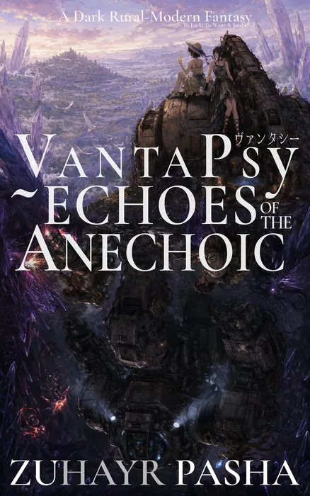

VantaPsy Chronology
Book One Available Now
Three books forming the first arc of the VantaPsy Chronology, all set during the Age of Men on Aerisu. Some stories connect directly, while others expand the same world through different characters and events.
Echoes of The Anechoic is out now on Kindle. Books Two and Three are fully written and being prepared for release, with cover art in progress. Each will be announced individually when it's ready.
VantaPsy Chronology · Book One
Echoes of The Anechoic

A dark rural-modern fantasy set within the wider VantaPsy Chronology, blending folklore, industrial fantasy, surrealism and cosmic horror into literary fiction exploring desire, the nature of the soul, and the ways love, suffering and inherited wounds shape what we become. Structured around two interwoven arcs, it follows Zuki's ascent through Aokusa and the Sahrani expedition into the Geode, expanding the world of VantaPsy: Soul Snatcher through stories and characters beyond the game.
What is a mountain that never listens? Zuki lives in the mountain realm of Aokusa with her weakening mother, Kasumi, while her father Daigo is always away on military patrols protecting the village. When Kasumi refuses a sacred flower said to cure her illness, believing she must climb Megami-no-Mine and receive one from Eirimegami herself, Zuki decides to make the climb in her place. Mika, the village girl who has spent years alternating between mocking Zuki and quietly looking after her, follows because she knows Zuki is unequipped to survive the journey alone. What begins as a search for a single flower becomes a dangerous passage through the mountain's forests and abandoned routes, where they encounter Cursed creatures, Kodama, Yamakage, old shrines, recorded echoes, death gardens and outcasted afflicted.
What is an earth that remembers? The people of Sahran live in repentance and exile under a lopsided alliance with the technocratic Autarchs. Bitter engineer Tayyir and tech-savvy geologist Qumari are sent into the Geode's newly discovered high-pressure Vanta vein, where their knowledge of its dangers makes them better suited than the miners who work it. They leave their engineer prodigy son, Khaliat, under the not-so-watchful eye of an overly devout caretaker, while the expedition descends under the watchful and handsome eye of Hiro, an Autarch mech pilot whose easy humour masks a life shaped by war, duty and displacement, and Dr Lucan, a Solmaran researcher using the expedition to prove himself to his peers. As the Geode itself begins behaving like something alive, the expedition is drawn towards a Vanta vein that may reveal the origin of the Curse.
VantaPsy Chronology · Book Two
Ashen Crescent

The world cracked open, and from its heart poured fire. Beneath the desert's crust, in a sunless city called the Geode, the last remnants of a broken people cling to survival. When a cursed expedition awakens something ancient buried in the earth, a plague of flame and shadow tears through stone, faith, and memory alike.
A helper named Hurriya becomes the light of a dying world. A bitter engineer builds a plane from dust and desperation. A girl from a mountaintop, Zuki Kusanagi, falls into the ruins of a war she has never known, born again through ash and blood. From the sewers of Ori'sol to the silent highlands of Aokusa, Ashen Crescent carries the consequences of what came before into a world where survival itself becomes a form of defiance.
VantaPsy Chronology · Book Three
The Ocean Maw

The moonless, fractured world of Aerisu is haunted by a memetic Curse that erodes memory, dream, and soul. When strange signals rise from the abyssal trench of Vaelmir, the Ocean Maw, the great submersible dreadnought Vireliax descends to investigate. Officially, the mission is research. Unofficially, it is a plunge into something divine, or something monstrous.
A fragile fellowship gathers aboard: a scholar carrying forbidden truths about a planetary intelligence called Bahamut, a researcher clinging to memory and relics of the real, a disciplined warrior bound by loss and duty, a legendary pilot masking alienation, and a child recording myths in secret. What begins with ritual and banter soon erupts into blood and fire, while something far older waits below.
More entries in the Chronology are planned. The three books above are the first arc.